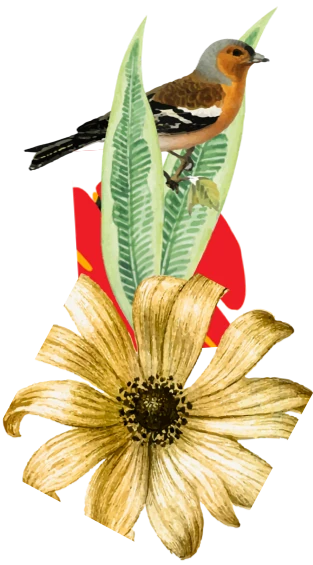
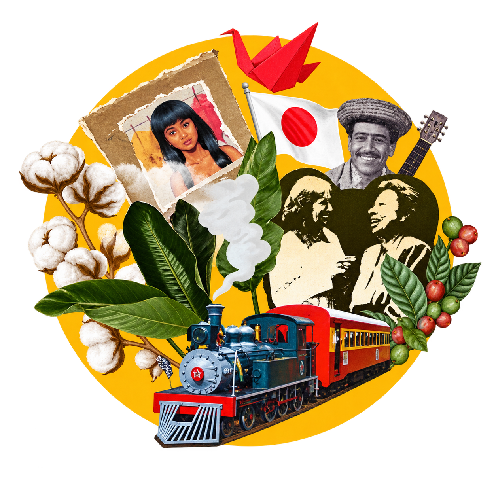
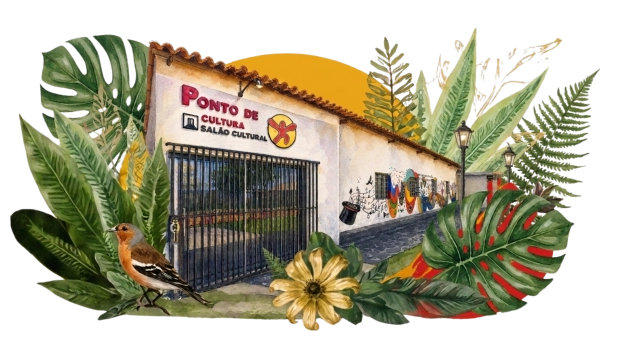

Ponto de Cultura
Salão Cultural
Um espaço de encontro, expressão e transformação através da arte, da cultura e da comunidade
ENTRE NO SALÃO
NOSSA HISTÓRIA
Saiba mais sobre nós
Um lugar feito pela comunidade
As raízes do Salão Cultural estão no antigo Projeto Brincarte, desenvolvido com educadores, artistas, moradores, crianças e jovens da Vila Gammon. A arte passou a ocupar um lugar central na formação, na convivência e no pertencimento.
Hoje, o espaço é mantido pela Associação Popular dos Moradores das Vilas Gammon e Francisco Roberto e segue aberto a novas histórias.

Resultados
Nosso Impacto
+15
Anos de atuação cultural
5.120
Estudantes atendidos
120 mil
Pessoas alcançadas